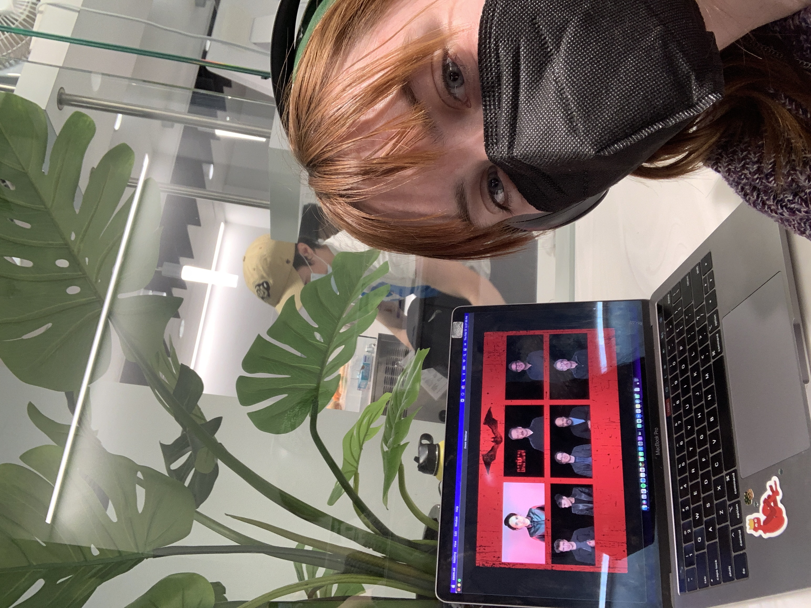

My most recent project has been interviewing the cast and crew of The Batman and writing an article reviewing the movie. To read all about it (spoiler warning) go here! This was a super fun project to work on, not just because I got to interact with so many cool people, but I saw the movie before it was released to the general public. I really loved working on this, and it pushed me out of my normal beat of fashion, food and culture. Writing about a specific piece of media and diving into how I felt about it and what I liked was super fun. This opportunity was such a good one to add to my LinkedIn and resume, and it has really made me appreciate how important it is to do things that you are interested in, even if you don't know where they will lead. I joined HCCU my sophomore year, second semester and just thought that I'd be adding a writing portfolio to my resume, but I ended up becoming the Events and Management Director for the club, and next year will be the president. It's crazy to think about how applying to this club on a whim will end up being such an important part of my college career.
I set up volunteering with a domestic violence shelter with Her Campus CU Boulder. We volunteer with them about once a month and organize their donations, assist with childcare and host resume workshops. This is a rewarding project to work on, since we see the facility stay more and more organized each time we go, so it really feels like we're making a difference. The faculty at the shelter is so grateful for the work that we do. This has been one of my favorite partnerships to do with HCCU, because I can actually see the impact we create. It's amazing to do other partnerships with brands like Maybelline, Pentel, WarnerBros, and many local businesses, but nothing feels quite as important as this partnership.
This is my full writing portfolio, with all of my published work through Her Campus CU Boulder. I have been a part of HCCU for a year and a half now and write an average of 5 articles a month. HCCU has been a really amazing place for me to meet new friends, have a writing outlet and to build my resume. HCCU has led me to my first internship, which is, of course, always the hardest one to get. I have learned about my own leadership style, had lots of practice with time management and gotten published in the process. I don't know what my resume would be looking like without HCCU, as I always joke that it's my whole resume. Between my position in the club and my internship with HQ, as well as where those experiences have led me with other internship opportunities, I am so thankful for how HCCU has helped me professionally